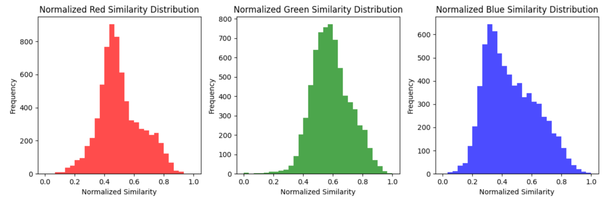

We have developed the CS One-Eighty-Dance-Floor, a groundbreaking platform that automatically generates a 3D dance environment from a song's audio file. By analyzing the audio, the system maps frequencies to predefined dance moves, synchronizing these movements with the music's tempo. Utilizing machine learning, the platform converts each song into a semantic embedding within a textual space, which is then used to assign specific colors and shapes. This innovative approach allows for a visually dynamic and rhythmically engaging dance experience tailored to the unique characteristics of each song.
Our music analysis is split up into two main parts: signal and semantic analysis. The signal analysis focuses on converting the audio signal into spectral components that allow us to gather frequency information of an audio file. By calculating the spectral content of the signal, we are able to see how the vibration of a song changes over time. We computed the mean of these signals over different time spans of a song to be able to measure the activity in a song. We then mapped this value to different dance moves, so our objects could dance to the calculated “energy” of the song. Our current product maps the calculated “energy” to three different dance moves: dancing in a circle, dancing in a line, and double jumping in a line.
Using the Librosa Python library, we were also able to find the time at which each beat in a song occurs. Using these time values, we could integrate different features into our final animation, like bouncing at these specified times, flashing lights when the beats occur, and rotating the objects to the speed of the song.
The semantic analysis focuses on the extra-musical meaning of these songs—how someone would describe a song based solely on its audio. This includes the emotional tone, the dynamics of the rhythm, and the textures present in the sound. It also considers the intensity and complexity of musical elements, translating these into visual expressions that reflect the perceived mood and energy of the song. This method allows for the creation of a dance environment that visually and kinetically mirrors the intrinsic qualities of the music, without reliance on external metadata.
The semantic embedding model, spearheaded by Jackson for a project beyond class activities, was adapted and refined specifically for our purposes. It utilizes a transformer architecture to process audio files, first converting them into a mel spectrogram representation. This representation breaks down the audio into visually interpretable components, capturing the spectral features of the sound. These mel spectrogram segments are then divided into smaller patches, which are fed into a transformer. This transformer is designed to map these audio-derived patches into the OpenAI API embedding space, effectively translating complex audio signals into a format that can be further analyzed and correlated with visual and interactive elements in our project.
In our initial attempt to map colors to music, we designed a straightforward feedforward neural network that transformed a 128-dimensional semantic embedding of a song into a 3D RGB color vector. Despite using small datasets that contained color labels for specific songs, the output from our trained models often appeared arbitrary and lacked consistency. This challenge led us to rethink our approach. Inspired by insights from color theory lectures, we explored the concept of transitioning between different color spaces. This exploration involved identifying the positions of the basic colors "red," "green," and "blue" within the semantic embedding space. By understanding these positions, we aimed to create a direct mapping from the semantic space of a song to its corresponding RGB space, using distances normalized to 0-1 to these primary colors to determine the most accurate color representation of the song. In a dataset with around 10,000 songs the distribution for each color can be seen below:
To introduce greater visual variety, we enhance the outputted color by creating a small gradient. We achieve this by mapping the songs to an HSV (Hue, Saturation, Value) color space. Using this color model allows for intuitive navigation and manipulation of colors. By applying small linear decrements across the HSV values, we generate a unique gradient for each song. This method enriches the visual experience, providing a more dynamic and aesthetically pleasing representation that evolves subtly in response to the music's characteristics.
Initially, we tried to implement our visualizer using just WebGL, but its low-level nature caused us to spend way too much time on nitpicky items instead of the big-picture motion, and we got even bigger headaches when rendering 3D objects. Thus, we shifted to using the library ThreeJS, which is a wrapper on top of WebGL with a focus on 3D animation. ThreeJS allowed us to focus on setting the stage, drawing the 3D shapes, tuning lighting, and other key elements of the project.
Our approach to moving the shapes focused on simplicity and efficiency. We first plotted the three key movements we wanted: jump in a circle, jump in a line, and a double jump (similar to jumping in a line, but twice as fast with shorter hops).
We initially tried to model our movement with somewhat realistic physics (acceleration, gravity), but found that it was (a) too complex, (b) often became unstable, and (c) more computationally complex. Thus, we moved forward with modeling our motion using trigonometric functions over time. While less realistic than physical simulations, this allowed us to quickly and easily implement the desired motion, as shown in the demo footage.
From Three.js documentation, we found that the loop re-renders every millisecond. Thus, when we fed time into the respective trigonometric function, we multiplied it by 2 * 𝝅 * bpm / 60 * desiredMovementRate.
Each movement could be modeled as a parametric function, with varying x, y, and z inputs depending on the movement type. Motion along the y-axis was independent of motion along the x- and z-axis since the bouncing would take place regardless of the object’s translation over the plane. Bounces were simply Math.abs(sin( … )) since we wanted to model a bouncy motion that eased in and out while being sharp.
Our shapes are dancing at a disco! To implement the disco floor background, we used environment mapping to set the background texture. This technique essentially maps the disco image onto a large sphere surrounding the scene. The sphere was flipped inside out so that the background was correctly displayed inward.
To produce as smooth an appearance as possible, we fine-tuned the radius of the sphere, the number of horizontal segments, and the number of vertical segments. A larger radius resulted in a larger field of view, at a cost of warping the floor more. On the other hand, a smaller radius produced a flatter floor, but it showed a smaller portion of the background.
The number of horizontal and vertical segments were parameters that determined the level of detail of the sphere geometry. Adjusting these values was a tradeoff between performance and visual fidelity. Using more polygons creates a smoother and more detailed surface, but it also increases memory usage and load time needed to render the sphere.
Each of the dancing shapes was shaded using MeshPhongMaterial for per-fragment shading. This material calculates reflectance and simulates specular highlights on shiny surfaces using a non-physically based Blinn-Phong model. While the simpler Lambertian model used in MeshLambertMaterial had a slightly better performance, we thought shiny shapes were more fun!
As mentioned earlier, our model that analyzes the song creates a unique gradient for each snippet. Initially, we decided to change the color of the object itself, but we found that having a series of lights that are the color of the gradient was even cooler.
Thus, we moved to creating a row of directional SpotLights behind the scene, whose values are a linear interpretation between the position of the light along the row (from 0 to 1) and the outputted color values from the model.
We had a tricky time figuring out the lighting because it ended up being either too sharp or dull, but we utilized the SpotLightHelpertool in ThreeJS which allowed us to visualize the paths of the lights.
We implemented three shapes: cube, sphere, and egg. For cube and sphere, we simply made use of the built-in ThreeJS primitives. For the egg, however, we utilized the egg equation to define the series of points that would render the egg since it was not one of the built-in primitives from ThreeJS. The shapes for a given song are determined in a simlar way to the colors, except done more directly by finding the semantic distance from the song directly to the shapes.
We successfully rendered animations for 3 songs: Yeah! By Usher, Stick Season by Noah Kahan, and Gymnopedie No 1 by Erik Satie, as a proof of concept, though the model and visualizer could reasonably work for any input .mp3 file.
We have utilized a few online resources and libraries to supplement our final product. For the frequency analysis, we used Librosa, a python package for music and audio analysis. It allowed us to perform Fast Fourier Transform on the audio file and derive meaningful metrics that were used to power our dancing objects!
Zarmina: Zarmina contributed to this project by performing FFT on the audio signal and deriving meaning that would contribute to the final animation. This includes the mean of the FFT-derived frequency spectrum throughout the song, the time at which each beat occurs, and the intensity of each beat.
Adi: Adi contributed to this project by focusing on the animation and kinematics of the shapes. Given certain values for the BPM, colors, and other factors mentioned earlier, he focused on creating the shapes themselves. He then moved to implement the motion of the shapes, figuring out how to make them move in the same, mesmerizing manner as the reference TikTok video.
Jackson: Jackson contributed by focusing on the semantic analysis of songs, translating audio features into visual representations of colors and shapes. He developed the methodology to map audio features into semantic embeddings, which then influenced the visual elements in the final animation, ensuring that the visuals accurately represented the music's emotional and thematic content.
Elaine: Elaine contributed by implementing the textures, scenery, and shading portions of the project. This involved adjusting the Blinn-Phong shading models on the dancing objects, adding ambient lighting, environment mapping to create the disco floor texture, and manually testing background images.